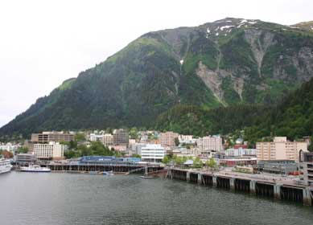

Juneau, Alaska, recently garnered national attention for its response to an electricity crisis that drove utility bills through the roof. On April 16, a series of avalanches damaged and destroyed the transmission towers along a 1.5 mile stretch of the line that delivers hydropower to the city. As a result, Juneau had to supply all of its power from diesel generators, despite record-high prices for diesel fuel.
Diesel fuel consumption rapidly shot above 80,000 gallons per day, but once residents found out that electricity rates would increase from about 11 cents per kilowatt-hour to 52.5 cents per kilowatt-hour, the city rapidly pursued ways to save energy. As a result, the city's peak power usage dropped from about 50 megawatts before the avalanches to below 30 megawatts by late May. Total electricity usage dropped from about 1,000 megawatt-hours per day before the crisis to roughly 600 megawatt-hours per day in late May, a 40 percent drop. For the last week in May, the city's diesel fuel use averaged only about 35,000 gallons per day.
The power crisis is now solved, as Alaska Electric Light and Power Co. announced on June 1 that the hydroelectric transmission line has been restored. However, the high emergency rates will remain in effect until the next billing cycle, so the city still needs to conserve electricity.
To help residents reduce their electricity use, the city mailed a flyer to all households noting ways to save energy, such as switching to compact fluorescent light bulbs, microwaving, washing clothes in cold water, and line-drying clothes. In addition, both the city and the Juneau Economic Development Council created Web pages with information on how to save energy, while a group of concerned citizens launched Juneau Unplugged, a community campaign to encourage energy savings.
|
 PAUL SENYSZYN/ISTOCKPHOTO The residents of Juneau, Alaska, recently went through a crash course in energy conservation after an avalance cut off transmission lines that supply hydropwer. The city was able to reduce its electricity use by 40 percent through numerous efforts. |
|
|